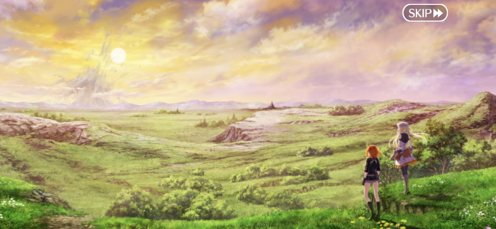

About the Game
Fate/Grand Order (FGO) is a turn-based tactical RPG mobile game developed by Delightworks and published by Aniplex. Based on the popular Fate series, players take on the role of a Master, summoning heroic spirits known as Servants to battle threats across time and space.

Favourite Arc: Avalon le Fae
Avalon le Fae is one of the most beautifully written Lostbelts in FGO. It takes place in a dark, fairy-tale version of Britain, filled with mystery, sadness, and beauty.The characters are not just heroes or villains, they are complex people with reasons behind their actions. For example, Morgan, Castoria, and especially Oberon stand out because of how emotional and surprising their stories are. They are also my top 3 three characters so far in this game. The world itself feels alive, with its own rules, history, and sadness. The writing is emotional and thoughtful and the background music and art make the scenes even more powerful. The story is long, but it never feels boring because it keeps surprising me with twists and deep moments. The ending is touching and bittersweet. Most people also says that Avalon Le Fae is the best arc in fgo and and it's not just a rumor. There also quote like "AVALON LE FAE is when FGO peak.In the end, Avalon le Fae isn’t just a story, it’s a full emotional journey that shows how great FGO’s storytelling can be.
Favourite characters
There are a lot of characters in Fate Grand Order. There are approximately 431 characters in this game. However, there are 5 characters in FGO that really interest me. Their design, voice acting, and battle animations are incredible.Furthermore, They also have deep and interesting backgrounds that make the game even more interesting. Below are my top 5 characters in Fate Grand Order:
Morgan Le Fay